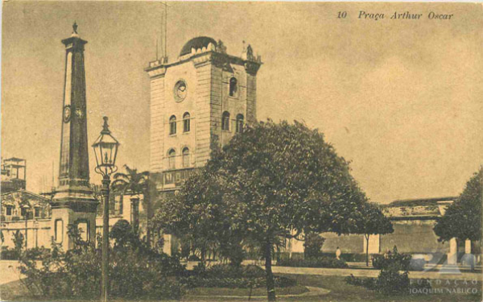

Praça Arthur Oscar
Mais conhecida como Praça do Arsenal, este espaço era chamado anteriormente de Praça Voluntários da Pátria e posteriormente de Arsenal da Marinha. O nome Artur Oscar é uma homenagem ao general que esteve entre os comandantes da campanha de Canudos. A praça possui uma rica história, servindo como um importante ponto cultural e histórico no Recife Antigo. Rodeada por belos edifícios históricos, é um local encantador para se explorar e mergulhar na herança cultural da região.
Antigo Recife
O Antigo Recife é um testemunho vivo da história da cidade. Suas ruas de paralelepípedos, construções coloniais e igrejas centenárias refletem a essência da herança cultural da região. Caminhar pelas ruas estreitas é como viajar de volta no tempo, com suas histórias gravadas nas fachadas dos edifícios e nas estruturas arquitetônicas. A rica atmosfera e os detalhes bem preservados fazem do Antigo Recife um destino imperdível para os amantes da história e da cultura.